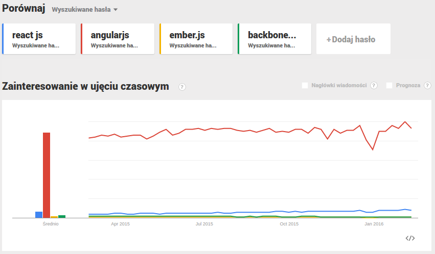

React with Ruby on Rails
Created by Maria Stokłosa / @mariastoklosa
Why did I choose this topic?
Historical background
Created by Jordan Walke working at Facebook
Influenced by XHP - HTML component framework for PHP
First deployed on Facebook newsfeed in September 2011
Open-sourced at JSConf US in May 2013
Initial reactions of users
“This is absolutely the worst of the many wrong-headed 'improvements' you have made, and that's quite a feat.”
“I think Facebook's usefulness to me has now been outstripped by its lack of ease in use.“
General interest in React
What React is?
JS library used to build UI
V in MVC architectural pattern
Tool developed by community, Facebook and Instagram
Complete control of the loading experience because of AJAX calls
What React is not?
Application framework
Framework providing two-way data binding
Framework having AJAX capabilities
Event system provider
Benefits of using React
Easiness of breaking UI into component hierarchy
Easiness of extending and maintaining views
Providing less surface area for XSS vulnerabilities
Virtual DOM
How to integrate Ruby on Rails with React?
Using React inside of Rails with react-rails gem
Creating React front-end application within Rails
Separating Rails API and React front-end application
Using React inside of Rails with react-rails gem
Using React inside of Rails with react-rails
Simplest method
Handy view helper that lets you render (and server render) react components in rails views
Using React inside of Rails with react-rails
Define your data in the Rails controller
Using React inside of Rails with react-rails
Controller passes data into the view helper
Using React inside of Rails with react-rails
Helper passes the data as props to the React component
Converting data to JSON format
ActiveModel::Serializers
Jbuilder
Using React inside of Rails with react-rails - code samples
# app/views/users/show.html.haml
= react_component('UserShowPage', render(template: 'users/show.json.jbuilder'))# app/views/users/show.json.jbuilder
json.user do
json.extract!(@user, :id, :email, :description)
end# app/controllers/users_controller.rb
def show
@user = User.find(params[:id])
endUsing React inside of Rails with react-rails - code samples
# app/assets/javascripts/components/users/user_show_page.js.cjsx
window.UserShowPage = React.createClass
render: ->
<div>
<ul classname="list-unstyled">
<li>
<b> Email: </b>
{ @props.user.email }
</li>
<li>
<b> Description: </b>
{ @props.user.description }
</li>
</ul>
</div>Using React inside of Rails with react-rails - pros
Asset pipeline JSX compilation
JS adapter that automatically mounts React components
View helper for generating mount node
Using React inside of Rails with react-rails - cons
Data defined on Rails side for server rendering
No possibility of ignoring AJAX calls with Flux when data is in store
Creating React front-end application within Rails
Creating React front-end application within Rails
react_on_rails gem that makes setup easier
Easiness of leveraging npm modules and using ES6 in project
Creating React front-end application within Rails - pros
Completely separates out the front-end
Feels like having complete JavaScript MVC
Creating React front-end application within Rails - cons
Most complicated approach for people that want to start learning React
Setting up server-side rendering destroys the beauty of front-end separation
Separating Rails API and React front-end application
Separating Rails API and React front-end application
Having 2 separate applications: one for backend and one for frontend
Involves Rails API serving data
Separating Rails API and React front-end application - pros
Code separation is nice conceptually
Easiness of switching into other type of backend
Separating Rails API and React front-end application - cons
Server rendering becomes more complicated
Difficulty of maintaining 2 servers with 2 applications
Follow up
THE END - Q & A
Maria Stokłosa
twitter: @mariastoklosa
github: marysieek
e-mail: stoklosama@gmail.com